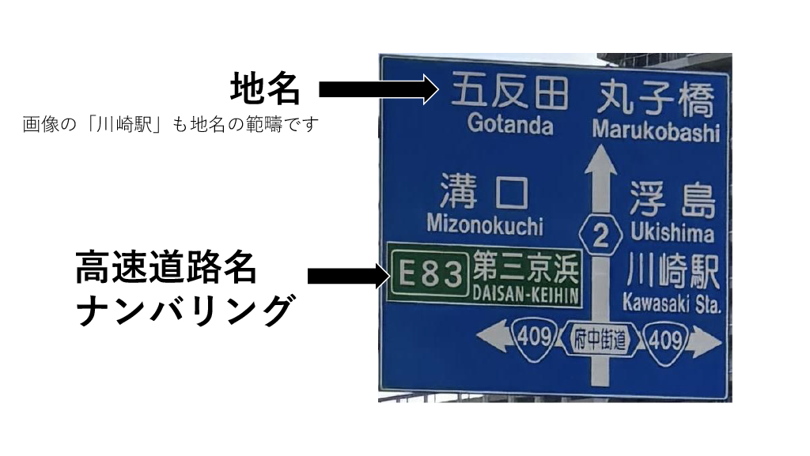
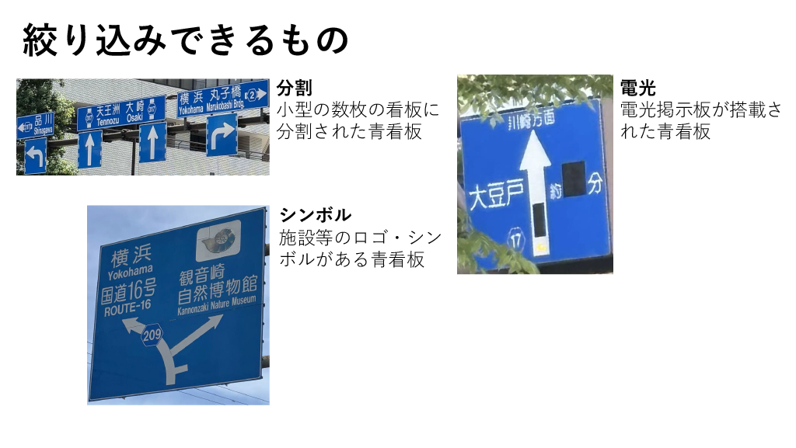

青看板検索ツールについて
道路上にあるすべての青看板を網羅することを目指した個人サイトです。写真の撮影、記録等すべて作成者が行っています。
ツールの使い方
検索可能な文字列
検索ボックスには地名、高速道路ナンバリング、高速道路名を入力して検索することができます。
地名及び高速道路名の表記揺れ（「ケ」と「ヶ」、「首都高」と「首都高速」など）は、どちらを入力してもヒットします。

絞り込み機能
道路種別と形状から絞り込みできます。将来的により詳細な絞り込みが可能になるようにする予定です。

作成者について
セッソー
武蔵国出身。好きな駅は新横浜
受験期のため現在Twitterはログアウトしています（27年3月頃復帰予定）